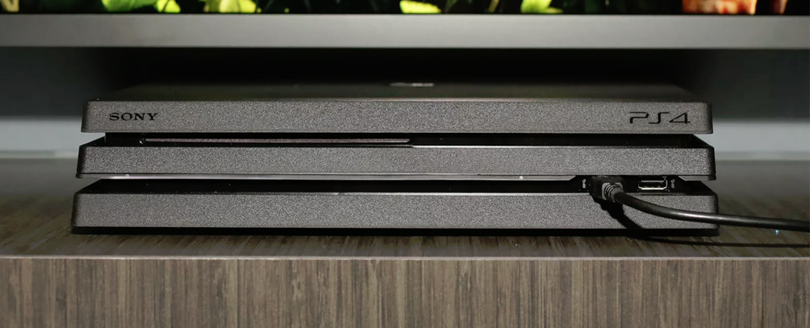
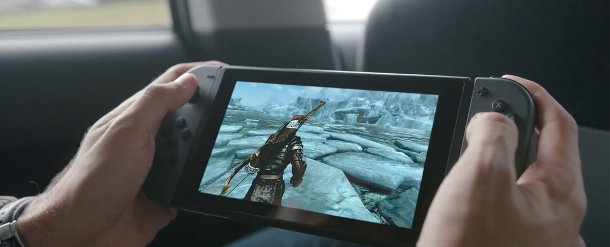

New Platforms
Stuck On What Console To Purchase? Sit Back, Relax & Judge For Yourself!
Xbox Scorpio: The Project Scorpio console will be available in the holiday season of 2017, Microsoft has confirmed. Previous console launches have taken place around November, so barring any delays it’s safe to assume that this is when you’ll be getting your hands on one. Xbox boss Phil Spencer recently confirmed via Twitter that both Xbox Scorpio games and hardware are already in production. With the console due out in just over a year, it's hardly surprising – but nonetheless, very exciting.

PS4 Pro: The latest PlayStation 4 had a few nicknames before Sony settled on ‘PS4 Pro’. “PS4 Neo” was a popular one, as were “PS4K” and “PS4.5”. I feel the last one is the most appropriate: this is an upgrade, not a proper level up like the PS5 would be. That means you’re not getting a next-gen console, but rather the best possible version of a three-year-old machine. Sony calls it “the super-charged PS4”, which seems fair. It’s bigger than ever, with more power under the hood, and it can handle 4K and high dynamic range (HDR) video. Sony’s biggest problem is Microsoft’s Xbox One S, itself a 0.5 upgrade. But while Microsoft generously added UHD Blu-ray playback during the refurb, Sony hasn't. The PS4 Pro is completely focused on gaming performance and fidelity.

Wii Switch: In the Nintendo Switch box you get the main body of the console, complete with two detachable controller sides, a grip which enables you to combine these controller portions into a more traditional gamepad, two straps which can be attached to these sides to make them into two individual controllers, and a dock that allows you to plug the console into your television. You also get a USB Type-C power cable (with a non-detachable power brick) and an HDMI cable for connecting the device to your TV.